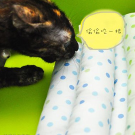

樂樂第一次的外宿生活-miya甜蜜貓旅店
台北 健康美容總得分
自八月的小琉球之旅後,這個月喵喵跟夯先生又安排了趟兩天一夜的台南美食之旅!!
那樂樂怎麼辦呢??
以前,就有考慮過出遠門他的住宿問題!!想說身邊養貓的朋友滿多的,可以代為照顧~但真的面對到這個問題時,又有諸多擔心!!擔心他跟朋友的貓不合,總不能叫朋友24小時幫你顧著貓~我們更是從來沒想過住宿在獸醫院OR寵物店!!!畢竟他要被關在一個小小的籠子裡,又有狗阿..等~而且獸醫院OR寵物店本來就是一些傳染病的大本營!!! 非必要就不要去囉~
剛好之前在網路上看見人家介紹"miya-甜蜜貓旅店"這是一間for貓咪的專門旅店!! 當時覺得很新奇,想不到現在派上了用場…
- 9999
- > 更多資訊

[K週刊旅遊版]鹽寮海濱公園海狗現身
台北 健康美容總得分

鹽寮海濱公園位於台灣東北角
佔地80公頃，並擁有3公里的金黃色沙灘入口為仿古的閩南式燕尾大脊古厝造型建築...
- 9999
- > 更多資訊